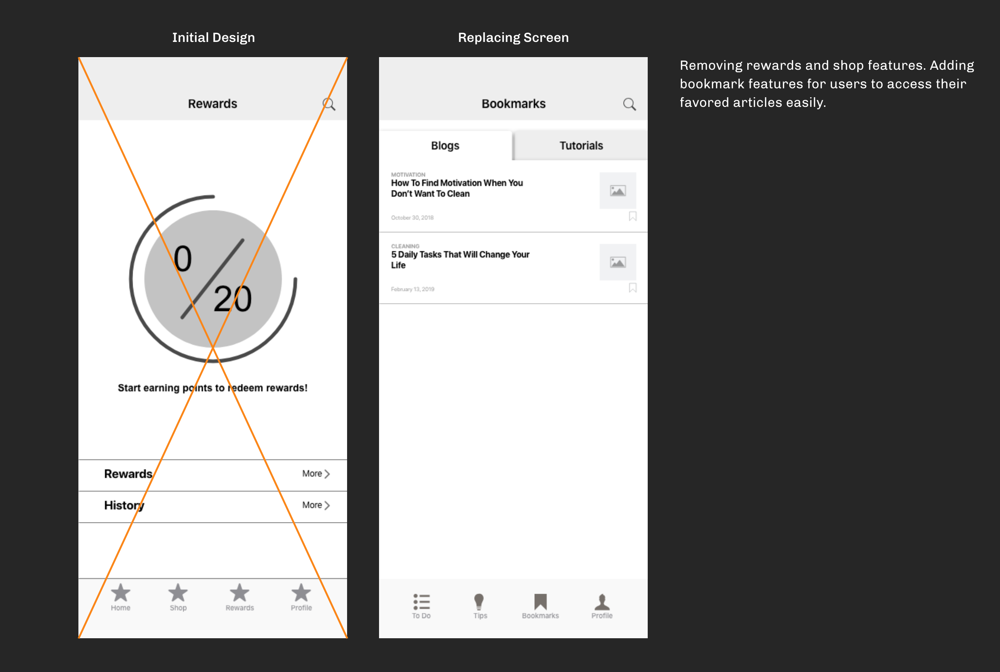
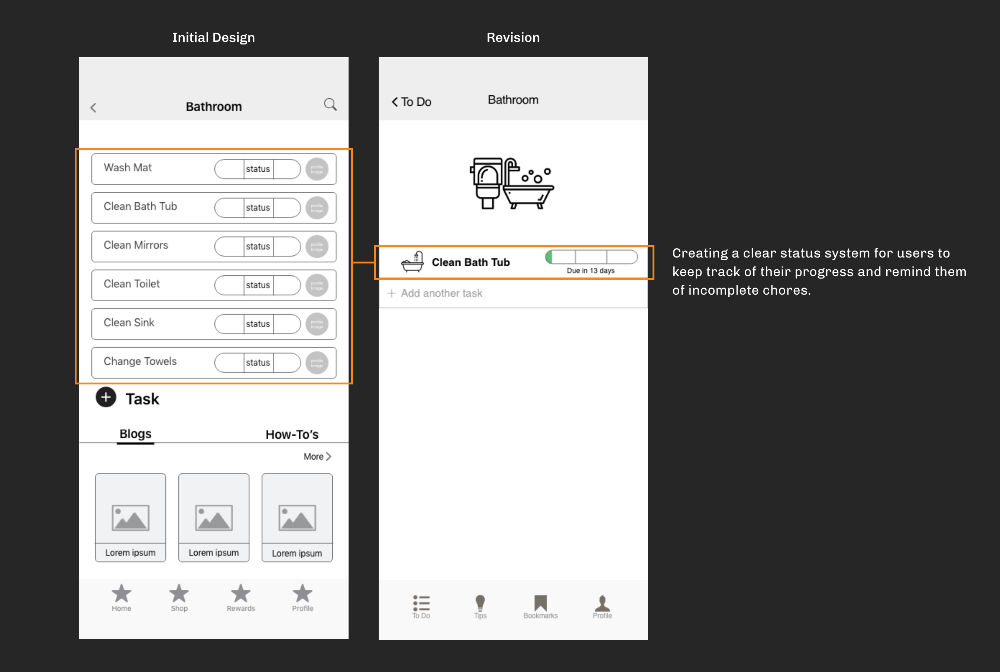
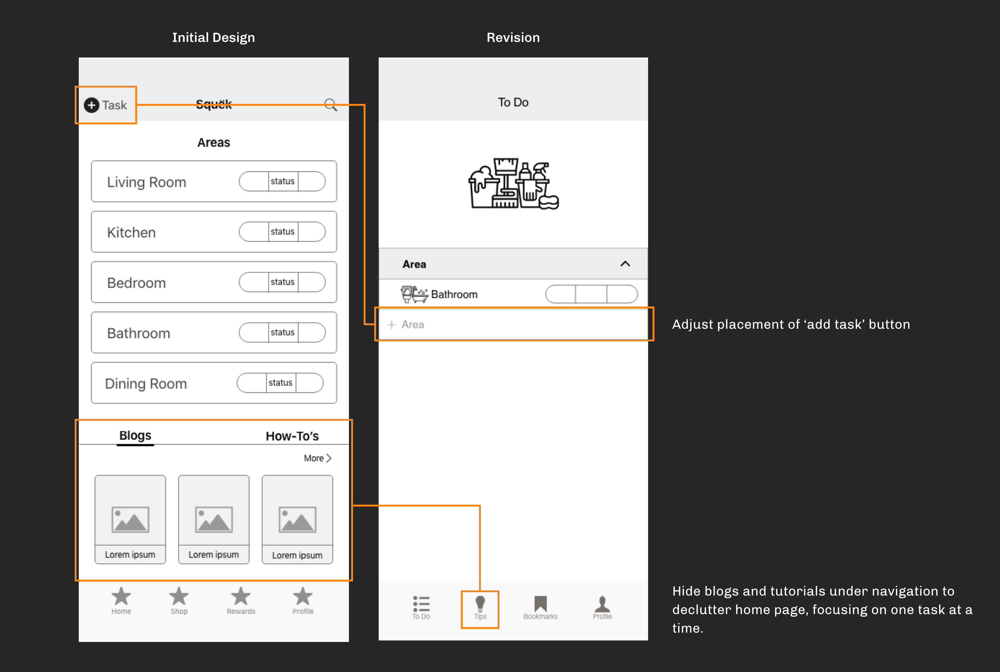

July 2019
Squek
A mobile app that helps individuals manage household tasks, while promoting wellness through cleaning.
Role
UXUI Researcher & Designer
Partner
Florence Pidlaoan
Overview
Happiness is a freshly cleaned home. The concept of this mobile app is to provide cleaning guidance to young adults while promoting wellness. The biggest influence behind our concept is the rise of Marie Kondo and her philosophy that the objective of cleaning is not just about organizing physical items within your home, it’s in conjunction with your emotions, productivity, and your daily lives.
Original Thought
Initially, we hypothesized that young adults are interested in keeping a clean home, but
feel
stressful when it comes to cleaning due to unclear guidance and lack of experience. From
that, we
proposed to create a subscription based cleaning supply app to provide young adults with all
that they
need within a simple click on their phones, whether it’s cleaning products or cleaning
tutorials.
“Mess causes stress!”
We came to realize that young adults is aware of the importance of a freshly clean home, but cleaning is not a factor of stress. In fact, many reflected that cleaning is a method to “de-stress” and allow them to be more productive. Moreover, the idea of a subscription based app for cleaning supplies is NOT of interest and many had doubts on how the app would sustain in the long run.
Utilize affinity diagram to group our thoughts
In-depth research & takeaways
In order to find out what our users are truly struggling with, we re-conducted online
surveys and
interviews with the objective to identify our users cleaning habits, how users feel about
cleaning and
what kind of priorities does it have in users' daily lives.
Using mind map and affinity diagram to organize our findings, we were able to narrow down
our user’s
key pain points and needs:
1. Maintaining a clean living environment among many people is
difficult
2. Young adults find it uncomfortable reminding their peers about their household
responsibilities.
3. Majority of people understand the importance of a clean home as it pertains to their
mindset
and
productivity.
Our Approach
We believe that young adults understand the importance of having a clean home in regard to their wellness, but find it difficult to manage cleaning tasks amidst full-time schedules whether they live alone or with others. Through clear pain points and unique takeaways, the team decided to create a task-managing app for cleaning while promoting wellness. Our users will be able to coordinate cleaning tasks with their peers and get motivated through daily blog posts and tutorials wrapping around topics of cleaning and wellness.

Our User
Karen Lang represents the young adults target market of our app. Her painpoints and needs guided us through the whole design thinking process as we brainstorm ideas and make revisions.


Storyboarding
Early Design
We started our design process with rough hand sketches and turned them into low fidelity wireframes. The first design included task-managing features, with blog posts, tutorials, cleaning supplies and reward systems. Through user testing, we were able to gather three pain points that users are most struggling with and made the appropriate changes for the final design.

User Insight 1 :
What is the main function of the app?
When conducting user tests, most people were confused about the purpose of our app. When trying to incorporate multiple features, users have trouble spotting the main call-to-action. To attack this problem, we decided to remove ‘shop’ and ‘rewards’ tab from our main navigation and decided to focus on one main user flow - create a task. To compliment our main feature, we designed both ‘tips’ and ‘bookmark’ features to guide and motivate users throughout the way.
User Insight 2 :
The UI looks overwhelming
Users seem to have trouble figuring out the main call-to-action on the homepage due to its busy layout. To clean up the UI, we decided to hide both blogs and tutorials in its navigation and focus the task managing feature.
User Insight 3 :
No confirmation after creating a task
Users reflected that when creating a task, no confirmation or clear display tells them whether the task was successfully created. To tackle that issue, clear status bar is incorporated. How it works is that when creating a task, the status bar will fill up with timeframe set to remind users of their tasks. The newest added task will also float to the top of the list.

More Projects

Impact
Media Partner Platform Redesign

Environmental Protection Agency
Government Website Redesign

Santa Barbara Zoo
Responsive Website Redesign